Magwash and PumpMonitor
Magwash (tiplet and wash buffer) and PumpMonitor (oil) curves are used to assess processes associated with the magwash module.
ProcessControlData_Magwash1 and ProcessControlData_Magwash2 files uses a capacitive circuit to monitor tiplet pick, tiplet check and tiplet eject, magwash fluid heights.
ProcessControlData_PumpMonitor uses a pressure transducer to measure the oil dispense in the magwash once cleaning step has completed. It is important to note for Fusion assays, oil is not dispensed into the MTU after magwash cleaning.
Curve folder view of magwash related curve files (tiplet sensing, wash buffer and oil)
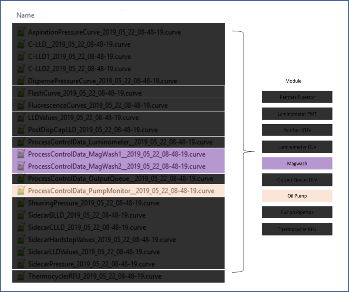
MTU workflow inside Magwash
Actual process cutoffs may vary by assay. For example, RTF assays use less oil and for Fusion assays, oil is not introduced at Magwash.
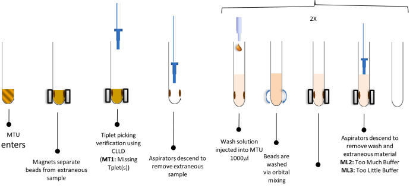
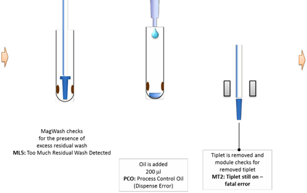
References for detailed explanation:
- MDD Firmware MagWash
- MDD Firmware PumpMonitor
- MTU storyboard
Magwash commands
| Command (Decimal) | Movement |
|---|---|
|
34 - PickTips |
Picks the tiplets and checks presence. After picking is done all drives are driven to init position. |
|
35 - EjectTips |
Eject the tiplets and checks presence. After eject is done all drives are driven to init position. |
|
45 - VerifyLiquidLevelFIR |
(LLV) Liquid Level Verification – Verifies liquid is at the expected level using a FIR differentiator. After check probes are driven to home position and magnet is in work position.For each tube a flag is set it the liquid level is invalid. |
|
46 - CheckResidualLiquid |
Check residual liquid command checks presence of liquid at the bottom of tube. After the check probes and magnet are driven to home position. |
|
47 - CheckEmptyMTUFIR |
Empty Check - Prime sequence only, final check that all priming fluid has been aspirated from MTU |
|
51 - CheckTips |
Tip Still On Check – after tiplet pick, before eject, checks if tiplet is present |
The first line of data is the header line, which explains the data within the column. Commonly used columns:
- CurveID: is not a column present in raw data. This value is assigned by curve trend software.
- Assay: as previously mentioned process parameters are tied to assay formulation.
- ProcessStep or CommandDescription: determines fluid type
- DateTime: UTC time
- TestOrderID: test order of sample
- SampleID: barcode of sample tube
- MTUNumber: MTU # since PantherMain was started
- MTUID: MTU barcode
- RFID: bottle A/B and rfid barcode value
- InstrFlag: RDV code
- Magwash_id: 0 = Magwash 1, 1 = Magwash 2
- FIR max: The maximum capacitive signal spike detected.
- FIR motor pos: The encoder position where the maximum capacitive signal spike occurred.
- Threshold or Treshold: The FIR maximum cutoff limit.
- Result0: Only informative if ErrorCode is not zero. This column indicates on which of the aspirators the error occurred. Convert the number in this column from decimal to binary to indicate the problematic tube. For example, if Result0 is 11, it converts to 1011 in binary. This indicates errors on tubes 1, 2, and 4 of the MTU.
Curve plots* (*in sw7.x additional columns were added, so curve file will require reformatting to render correctly in curve trend.)
Example of curve file and curve trend mismatch. Commands field show wrong information
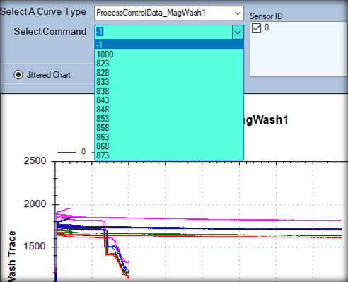
Tiplet Detection (Cmd = 34, 35, and 51)
- The value in the FIR max column is compared to the value in the Threshold column.
- If FIR max > Threshold, no tiplets were detected on this aspirator.
- If FIR max < Threshold, tiplets were detected on this aspirator.
- If tiplet sense (MT1) problems are occurring, note whether there are any trends from MTU to MTU.
- For example, check to see if the same tube in each MTU has an abnormal value. Also, note if any FIR max values are closer than 10 to the Threshold value
PickTips (command 34), check tiplets are present after picking
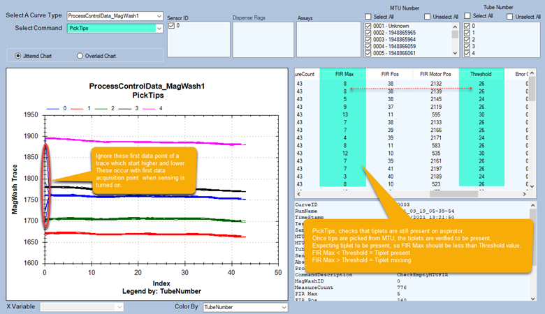
EjectTips (command 35), check tiplets are removed after eject
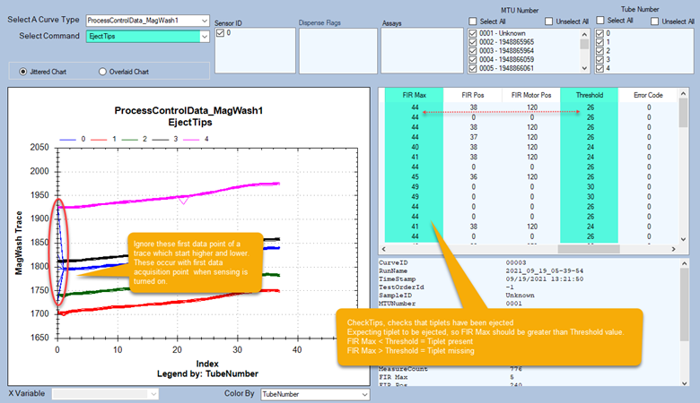
CheckTips (command 51), checks tiplets have not dropped off. Checks tiplets are present after picking and prior to ejecting.
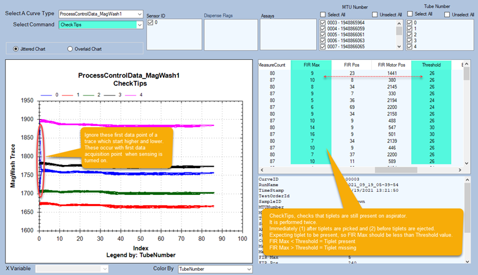
Microsoft Excel visualization of elevated FIR values causing false tiplet missing during CheckTips and PickTip commands
In this situation, the level sense board (loose aspirators or damage) and flex cable should be inspected and reseated at both ends.
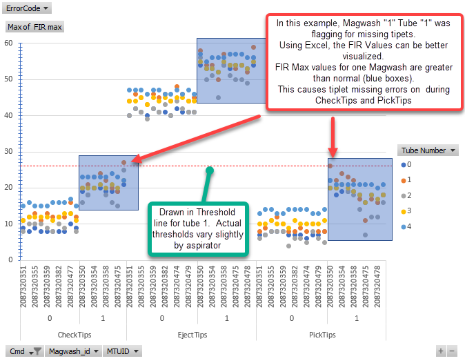
Wash Dispense Verification (Cmd = 45)
- If the value in the FIR max column is greater than the Threshold value, the Magnetic Wash Station did not detect fluid in the MTU tube as it should during this part of the process).
- If FIR max > Threshold, then the FIR motor position column is related to how much volume was detected in the tube.
- If FIR motor position ≤ 8475, then more than 1,200 µL of Wash solution was detected in the MTU tube.
- If FIR motor position ≥ 9170, then less than 800 µL of Wash solution was detected in the MTU tube.
- If ML2 or ML3 flags are occurring, note whether the same trends are seen on Magnetic Wash Station 1 and Magnetic Wash Station 2. If similar patterns are seen on both stations, this indicates a problem with the shared Wash Pump, as opposed to problems with the Magnetic Wash Stations.
- Problems detected at this step are typically caused by one of the following conditions:
- An under-dispensing Wash Pump (ML3)
- Clogs of the aspirator (ML2)
- Bubbles or foam caused by a bad wash injector (ML2)
- An empty or disconnected Wash bottle (ML3)
- Leaks in the Wash fluid line (ML3)
- Low vacuum pressure (ML2)
VerifyLiquidLevelFIR (command 45). Process control will general ML2 (too high) and ML3 (too low).
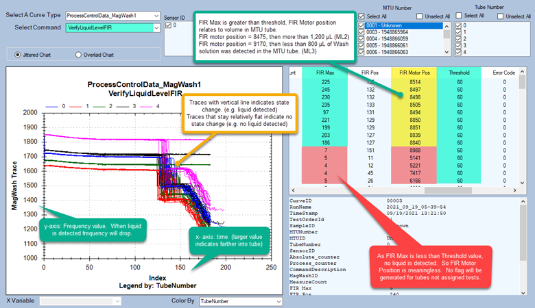
Residual Wash Check (Cmd = 46) and Empty Check (Cmd = 47)
- If the value in the FIR max column is greater than the Threshold value, the Magnetic Wash Station detected fluid in the MTU tube. The majority of the time at this step, the Magnetic Wash Station will not detect any fluid (i.e., FIR max < Threshold). However, it is not unusual for the Magnetic Wash Station to detect the presence of some residual fluid (i.e., sometimes you will see FIR max > Threshold).
- If FIR max > Threshold, then the FIR motor position column is related to how much volume was detected in the tube.
- If FIR motor position ≤ 10716, then more than 50 µL of Wash solution was detected in the MTU tube.
- If FIR max > Threshold, then one should typically see associated FIR motor position values > 10840.
- If residual wash (ML5) flags are occurring, note whether there are any trends from MTU to MTU. For example, check to see if the same tube in each MTU has an abnormal value.Also not if any FIR max values are closer than 10 to the Threshold value.
- Problems detected at this step are typically caused by a clogged aspirator or low vacuum pressure. Remove and inspect aspirators and note what kind of substance (if any) is removed from the aspirator.
- Empty check failure will result in a failed prime.
Priming check (command 47) – Process control verifies fluid is properly removed by aspirator after each dispense during prime. Priming fails if liquid is detected.
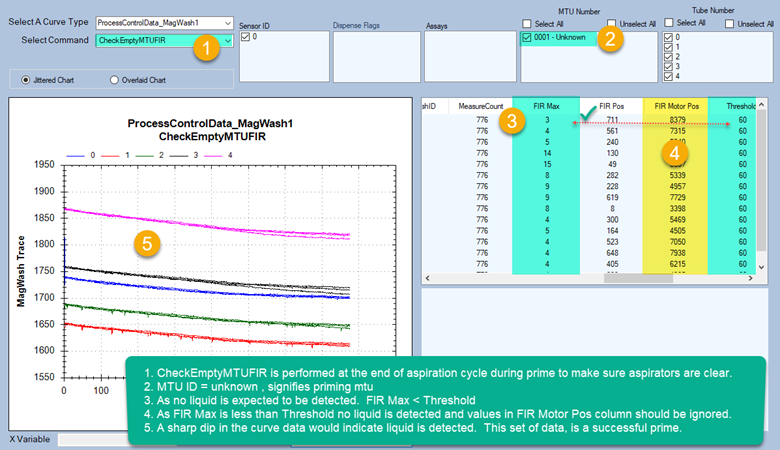
MW FIR Motor Positions translated to ML2 or ML3 errors
When threshold is valid, FIR motor position:
FIR Motor <= 8475, Detected volume is greater than 1.2ml (ML2)
FIR Motor >= 9170, Detected volume is less than 0.8ml (ML3)
Unknown dropouts that can cause LLS errors, tip pick errors, or other errors. If the issue persists:
-
Replace the Liquid Level Sense PCB.
-
If that does not work, replace the module.
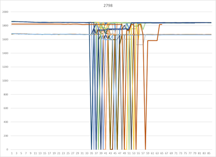
 button at the top of the page to send feedback, comments, or change requests.
button at the top of the page to send feedback, comments, or change requests.